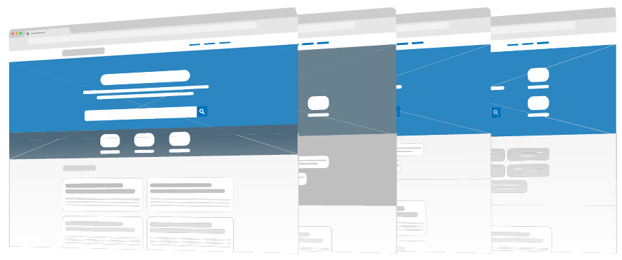
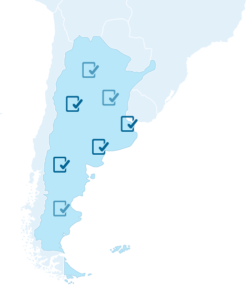

El portal redistribuible de datos de la República Argentina.
¿Qué es Andino?
Andino es un portal redistribuible desarrollado por el equipo de Datos Argentina para ayudar a los organismos del Estado en el proceso de apertura de sus datos.


Fácil y rápido de instalar.
En simples pasos, el proceso de instalación es similar al de cualquier sistema portable, como un editor de fotos. Andino está desarrollado sobre la plataforma CKAN (elegida por los principales exponentes mundiales en materia de datos abiertos), pero con todo lo aprendido por el equipo de Datos Argentina sobre la apertura de datos en el ámbito local.
Intuitivo
Trabajamos en la usabilidad del portal para que responda a las necesidades de los usuarios. Así, no se trata de que quienes abran los datos se adapten al sistema, sino de que el sistema pueda ofrecerles lo que necesitan al momento de trabajar.

Personalizable.
Para que cada organismo pueda adaptarlo a sus lineamientos y su identidad. Permite cambiar encabezados, textos, redes sociales y metadatos.

¿Para qué sirve Andino?
Andino es un portal de datos abiertos para facilitar el acceso y la documentación de los mismos por parte de los usuarios.

¿Por qué Andino?
Todos los formularios de carga fueron diseñados para cumplir con el Perfil Nacional de Metadatos lo que facilita la integración entre los datos que abre cada organismo.
Un ecosistema de herramientas útiles

Guía de uso

Guía de instalación

Kit de Datos Abiertos

Paquete de Apertura

Pydatajson